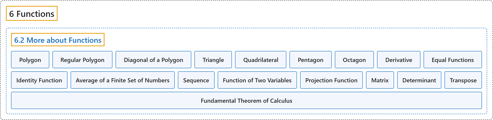

6.2 More about Functions
Classification

Glossary
| Term | Definition | 中文翻译 | Source |
|---|---|---|---|
| 6 Functions 函数 |
(No definition) | （无定义） | Sundstrom, 2022, chapter 6 |
| 6.2 More about Functions 函数的更多内容 |
(No definition) | （无定义） | Sundstrom, 2022, section 6.2 |
| Polygon 多边形 |
"A polygon is a closed plane figure formed by the joining of three or more straight lines." | 多边形是由三条或更多直线首尾相接形成的封闭平面图形。 | Sundstrom, 2022, section 6.2 |
| Regular Polygon 正多边形 |
"A regular polygon is one that has equal-length sides and congruent interior angles." | 正多边形是各边等长且各内角全等的多边形。 | Sundstrom, 2022, section 6.2 |
| Diagonal of a Polygon 多边形的对角线 |
"A diagonal of a polygon is a line segment that connects two nonadjacent vertices of the polygon." | 多边形的对角线是连接多边形两个不相邻顶点的线段。 | Sundstrom, 2022, section 6.2 |
| Triangle 三角形 |
"For example, a triangle is a polygon that has three sides" | 例如，三角形是有三条边的多边形 | Sundstrom, 2022, section 6.2 |
| Quadrilateral 四边形 |
"a quadrilateral is a polygon that has four sides and includes squares, rectangles, and parallelograms" | 四边形是有四条边的多边形，包括正方形、长方形和平行四边形 | Sundstrom, 2022, section 6.2 |
| Pentagon 五边形 |
"a pentagon is a polygon that has five sides" | 五边形是有五条边的多边形 | Sundstrom, 2022, section 6.2 |
| Octagon 八边形 |
"and an octagon is a polygon that has eight sides." | 八边形是有八条边的多边形。 | Sundstrom, 2022, section 6.2 |
| Derivative 导数 |
(context) "In calculus, we learned how to find the derivatives of certain functions." | （语境）在微积分中，我们学过如何求某些函数的导数。 | Sundstrom, 2022, section 6.2 |
| Equal Functions 相等函数 |
"Two functions \(f\) and \(g\) are equal provided that The domain of \(f\) equals the domain of \(g\text{.}\) That is, \(\text{ dom} ( f ) = \text{ dom} ( g )\text{.}\) The codomain of \(f\) equals the codomain of \(g\text{.}\) That is, \(\text{ codom} ( f ) = \text{ codom} ( g )\text{.}\) For each \(x\) in the domain of \(f\) (which equals the domain of \(g\)), \(f( x ) = g( x )\text{.}\)" | 两个函数 \(f\) 和 \(g\) 相等，如果：\(f\) 的定义域等于 \(g\) 的定义域，即 \(\text{ dom} ( f ) = \text{ dom} ( g )\)；\(f\) 的陪域等于 \(g\) 的陪域，即 \(\text{ codom} ( f ) = \text{ codom} ( g )\)；对 \(f\) 定义域中的每个 \(x\)（它也等于 \(g\) 的定义域），\(f( x ) = g( x )\)。 | Sundstrom, 2022, section 6.2 |
| Identity Function 恒等函数 |
"Let \(A\) be a nonempty set. The identity function on the set \(\boldsymbol{A}\) denoted by \(I_A\), is the function \(I_A: A \to A\) defined by \(I_A ( x ) = x\) for every \(x\) in \(A\text{.}\) That is, for the identity map, the output is always equal to the input." | 设 \(A\) 是非空集合。集合 \(\boldsymbol{A}\) 上的恒等函数记作 \(I_A\)，是由 \(I_A ( x ) = x\)（对 \(A\) 中的每个 \(x\)）定义的函数 \(I_A: A \to A\)。也就是说，对恒等映射，输出总是等于输入。 | Sundstrom, 2022, section 6.2 |
| Average of a Finite Set of Numbers 有限数集的平均数 |
"Let \(A = \left\{ a_1, a_2, \ldots, a_n \right\}\) be a finite set whose elements are the distinct real numbers \(a_1, a_2, \ldots, a_n\text{.}\) We define the average of the set \(A\) to be the real number \(\bar{A}\text{,}\) where \(\bar{A} = \frac{a_1 + a_2 + \cdots + a_n}{n}\text{.}\)" | 设 \(A = \left\{ a_1, a_2, \ldots, a_n \right\}\) 是有限集，其元素是互不相同的实数 \(a_1, a_2, \ldots, a_n\)。定义集合 \(A\) 的平均数为实数 \(\bar{A}\)，其中 \(\bar{A} = \frac{a_1 + a_2 + \cdots + a_n}{n}\)。 | Sundstrom, 2022, section 6.2 |
| Sequence 数列 |
"An (infinite) sequence is a function whose domain is \(\mathbb{N}\) or some infinite subset of \(\mathbb{N} \cup \left\{ 0 \right\}\text{.}\)" | （无穷）数列是一个函数，其定义域是 \(\mathbb{N}\)，或 \(\mathbb{N} \cup \left\{ 0 \right\}\) 的某个无穷子集。 | Sundstrom, 2022, section 6.2 |
| Function of Two Variables 二元函数 |
"Since the domain of this function is \(\mathbb Z \times \mathbb Z\) and each element of \(\mathbb Z \times \mathbb Z\) is an ordered pair of integers, we frequently call this type of function a function of two variables." | 由于这个函数的定义域是 \(\mathbb Z \times \mathbb Z\)，而 \(\mathbb Z \times \mathbb Z\) 的每个元素都是整数有序对，我们常把这类函数称为二元函数。 | Sundstrom, 2022, section 6.2 |
| Projection Function 投影函数 |
"One projection function will map an ordered pair to its first coordinate, and the other projection function will map the ordered pair to its second coordinate." | 一个投影函数把有序对映射到它的第一个坐标，另一个投影函数把有序对映射到它的第二个坐标。 | Sundstrom, 2022, section 6.2 |
| Matrix 矩阵 |
"A 2 by 2 matrix over \(\mathbb{R}\) is a rectangular array of four real numbers arranged in two rows and two columns." | \(\mathbb{R}\) 上的 2 乘 2 矩阵是排成两行两列的四个实数组成的矩形阵列。 | Sundstrom, 2022, section 6.2 |
| Determinant 行列式 |
"The determinant of the 2 by 2 matrix \(A\text{,}\) denoted by \(\det( A )\text{,}\) is defined as \(\det( A ) = ad - bc\text{.}\)" | 2 乘 2 矩阵 \(A\) 的行列式记作 \(\det( A )\)，定义为 \(\det( A ) = ad - bc\)。 | Sundstrom, 2022, section 6.2 |
| Transpose 转置 |
"The transpose of the matrix \(\boldsymbol{A}\), denoted by \(A^T\text{,}\) is the 2 by 2 matrix over \(\mathbb{R}\) defined by \(A^T = \left[ {\begin{array}{*{20}c} a & c \\ b & d \end{array} } \right]\text{.}\)" | 矩阵 \(\boldsymbol{A}\) 的转置记作 \(A^T\)，是由 \(A^T = \left[ {\begin{array}{*{20}c} a & c \\ b & d \end{array} } \right]\) 定义的 \(\mathbb{R}\) 上的 2 乘 2 矩阵。 | Sundstrom, 2022, section 6.2 |
| Fundamental Theorem of Calculus 微积分基本定理 |
"In fact, one form of the Fundamental Theorem of Calculus states that \(\int_a^b {f( x ) \, dx} = F( b ) - F( a )\text{,}\) where \(F\) is any antiderivative of \(f\text{,}\) that is, where \(F \,' = f\text{.}\)" | 事实上，微积分基本定理的一种形式是 \(\int_a^b {f( x ) \, dx} = F( b ) - F( a )\)，其中 \(F\) 是 \(f\) 的任意一个原函数，即 \(F \,' = f\)。 | Sundstrom, 2022, section 6.2 |
References
Sundstrom, T. (2022). Mathematical reasoning: Writing and proof (Version 2.1; PreTeXt edition by Grand Valley State University). Retrieved October 30, 2026, from https://gvsuoer.github.io/sundstrom-textbook/frontmatter.html